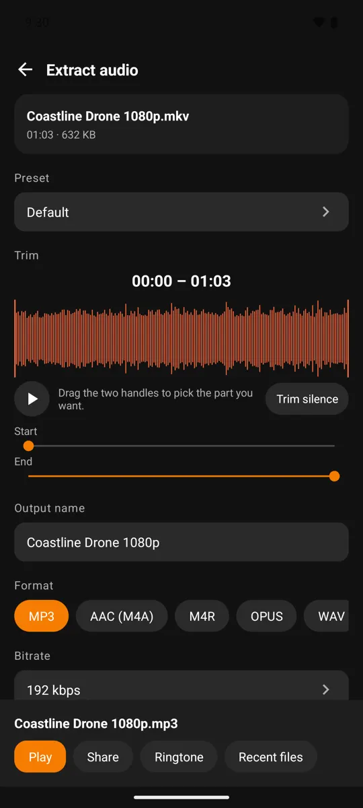

Extract WAV from video to continue editing audio
When there are multiple editing steps, you may need an intermediate audio track that is compatible with the receiving software. WAV is often used to exchange PCM audio but is larger in size than a normal compressed version. Confirm the editor's requirements before exporting a long source.
What you will do
Export audio from video to WAV with Video MP4 to MP3 Converter when an intermediate file is needed to include in another editing tool.
Steps
- Select video and open audio export options.
- Select WAV, check the sample rate and number of channels needed by the receiver.
- Make sure your device has enough capacity for a larger version of the results.
- Export and try importing WAV into the editor project, check the duration and sync if there is an image.


WAV does not restore lost information
Video sources often contain compressed audio. Exporting WAV avoids an additional lossy compression step in the intermediate file, but does not turn the source into the original recording. Once you've finished editing, you can create additional lightweight versions to share.
Frequently asked questions
Is WAV the lightest option for sending over the network?
Usually no. If the goal is to send quickly, consider a suitable compression format after the editing work has been completed.
Before you start
Advanced options, export quality or the number of files in one run may use credits or Premium. Check the details on the action screen before running; the interface can vary slightly by version and language.
Media processing happens on your device. Ads and purchases may use a network connection; see the privacy policy for details.
Get the app Video MP4 to MP3 Converter